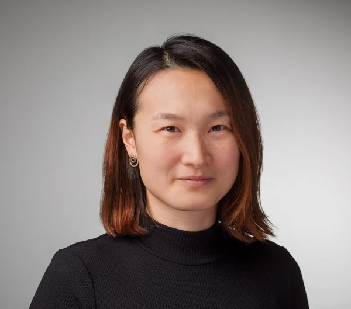

How do blood vessels shape the ageing brain?
Our lab focuses on vascular dementia and the vascular contribution to neurodegenerative diseases. We study how cerebral small vessel disease and stroke injure the brain and drive cognitive decline.
We combine genomic, multi-omic, imaging and clinical data from large cohorts and biobanks such as UK Biobank and the All of Us Research Program with statistical genetics and machine learning. Our goal is translation: finding causal proteins and pathways that can become drug targets, building risk prediction that works without costly imaging, and carrying the most promising findings into clinical application.
Funded by the Corona Foundation junior research group program for cardiovascular and neurovascular diseases.
We are hiring.
Postdoctoral researcher
Full time · 1 year, extendable until Jul 2031For someone with analytical experience in large datasets, from population genetics, bioinformatics, machine learning or another field that translates to human genetics. You will develop your own questions, design and lead analyses, write papers and grants, present internationally and help supervise PhD students.
PhD student
Part time 65% · 3 yearsFor someone with an interest in large datasets and first programming experience, from bioinformatics, biology, epidemiology, statistics, computer science or a related quantitative field. You will work on your own doctoral project and learn genome wide association studies, Mendelian randomization and machine learning.
We offer close personal supervision, career planning tailored to your goals and integration into national and international collaborations, in a friendly and open team. German is not required.
Diversity in research and medicine matters to us, and it is part of our science: our own work has shown that sexual and gender minority groups face a higher risk of poor brain health. We welcome applications from people of all genders, backgrounds, sexual orientations and life paths.
Selected work
First and last author papers. * equal contribution
- 2026Polygenic resistance to blood pressure treatment and stroke risk: insights from the All of Us Research ProgramHuo S, et al. Annals of Neurology
A polygenic score predicts which people remain hypertensive despite treatment and their higher stroke risk.
- 2025Association of polygenic susceptibility to hyperlipidemia with cholesterol control and recurrent stroke in ischemic stroke survivorsWu K*, Huo S*, et al. Neurology
Stroke survivors with high genetic susceptibility to elevated LDL cholesterol reach treatment targets less often and have more recurrent strokes.
- 2025Polygenic susceptibility to diabetes and poor glycemic control in stroke survivorsDemarais ZS, et al., Huo S*, Falcone GJ*. Neurology
Genetic risk for type 2 diabetes is linked to worse glucose control after stroke, pointing to patients who may need closer follow up.
- 2024Brain health outcomes in sexual and gender minority groups: results from the All of Us Research ProgramHuo S, et al. Neurology
Among 393,041 participants, sexual and gender minority groups had higher odds of a composite of stroke, dementia and late life depression.
- 2024A supervised, externally validated machine learning model for artifact and drainage detection in high resolution intracranial pressure monitoring dataHuo S, et al. Journal of Neurosurgery
Developed at University Hospital Zurich, the model keeps its accuracy in an independent cohort from Charité Berlin without retraining.
- 2022Intravenous immunoglobulins for treatment of severe COVID-19 related acute encephalopathyHuo S, et al. Journal of Neurology
A report on treating severe acute encephalopathy in COVID-19 with intravenous immunoglobulins.
- 2021Endothelial and leukocyte derived microvesicles and cardiovascular risk after stroke: PROSCIS-BHuo S, et al. Neurology
In 571 patients with a first ischemic stroke, high levels of endothelial and leukocyte derived microvesicles predicted recurrent stroke, myocardial infarction and death within three years.
Ongoing: proteogenomic discovery of drug targets for ischemic stroke (Mordecai New Investigator Award in Stroke 2025) and proteins that link APOE ε4 to vascular brain injury.

Shufan Huo
I am a physician scientist in neurology with training in clinical and genetic epidemiology and machine learning. After biomarker research in stroke at Charité Berlin and machine learning in neurocritical care at University Hospital Zurich, I was a postdoctoral associate at Yale University, working on stroke genomics and multiomic drug target discovery. I now combine research at the DZNE with clinical work as a study physician in the DZNE Clinical Trials Unit in Bonn.
At Charité, I founded the Gleichstellungsinitiative Neurologie (equality initiative in neurology) and served as representative of the neurology residents.
Outside the lab:
- Running
- Music
- Viola